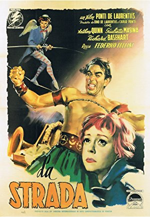
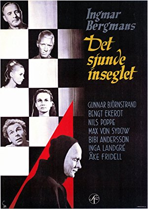
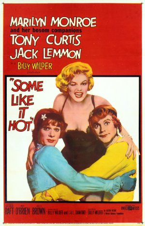

Season 50 (2015-2016)
-
 September 13, 2015Directed by F.W. Murnau; Starring George O'Brien, Janet Gaynor, Margaret Livingston, Bodil Rosing
September 13, 2015Directed by F.W. Murnau; Starring George O'Brien, Janet Gaynor, Margaret Livingston, Bodil Rosing
Sunrise: A Song of Two Humans (Inaugural film shown by Cinema, Inc. 1965)
(Inaugural film shown by Cinema, Inc. 1965)
USA, 1927, 94 min, B&W, Not Rated, Silent w/intertitles
Sunrise comes with a subtitle A Song of Two Humans. Interestingly, the characters are not named. At the start, we meet The Woman From the City who takes a vacation at the seashore. She has an affair with The Man who's married to The Wife with whom he is embroiled in marital problems. The Man is tormented by his infidelity but continues his tawdry affair. The Woman encourages The Man to kill The Wife. He gets cold feet and frightens The Wife who runs scared to The City. He chases her to The City where they reunite, culminating in events that settle who The Man ends up with.
Film Notes (Mark Van Hook): In 2008, prominent Oscar prognosticator Tom O'Neill decided he should take it upon himself to finally watch Sunrise, which shared the first Best Picture Oscar (for "Artistic Quality of Production") with William Wellman's Wings (which won for "Best Production") in order to settle the debate over which was truly 1927's best film. Upon viewing Sunrise, he haughtily declared it to be "paper-thin, hilariously schmaltzy," and found that "All three primary characters are cartoonish clichés and their performances 3-inch slices of honeyed ham." O'Neill concluded that "Wings soars by comparison."
Internet critics and film buffs came out of the woodwork to take O'Neill to task for his ludicrous assertion, and rightly so. Because while most agree that Wings is a towering achievement in itself, knowing cineastes believe Murnau's film to be in a class by itself. Today, as much as ever, Sunrise stands as one of the most lyrical and poetic films ever made and one of the great achievements of the silent era.
Produced at Fox, Sunrise introduced to Hollywood the expressionistic style that had made Murnau a world-renowned talent in Germany on such masterpieces as Faust, The Last Laugh, and the horror classic Nosferatu. The film features a deceptively simple three-act structure yet its story remains constantly surprising, as the dark betrayal of the first act gives way to redemption and hope in the final chapters. And though some viewers might view the emphasis on expressive emotionalism as "schmaltzy," more discerning filmgoers will be surprised to find themselves swept up in the melodrama, guided expertly by a director at the height of his powers using every tool in his cinematic arsenal to perfection.
It's fitting that Sunrise, the first film ever shown by The Cinema, Inc., is the film chosen to usher in our 50th season, because in many ways Murnau's film represents everything the organization stands for – namely, presenting great films that have stood the test of time. Murnau's masterpiece fits this description perfectly, standing as one of the great achievements of the silent era and one whose simple beauty still has the power to shake audiences nearly 90 years after its release.Read Roger Ebert's review of Sunrise: A Song of Two Humans at Great Movies. -
 October 11, 2015Directed by Philippe de Broca; Starring Pierre Brasseur, Jean-Claude Brialy, Geneviève Bujold, Adolfo Celi
October 11, 2015Directed by Philippe de Broca; Starring Pierre Brasseur, Jean-Claude Brialy, Geneviève Bujold, Adolfo Celi
King of Hearts (Le Roi de Coeur)
France/Italy, 1966, 102 min, Color, Not Rated, French w/subtitles; English
Set during WWI, the occupying Germans retreat from the town of Marville, France, but not before leaving behind a time bomb. The fleeing townspeople tell the approaching British forces about the hidden explosive. Pvt. Charles Plumpick, a poetry-loving Scotsman, is dispatched to locate the bomb. To avoid the German rear guard, Plumpick ducks into Marville's insane asylum. While trying to defuse the bomb he falls in love with one of the lovely inmates, Coquelicot. The inmates hail him as the King of Hearts before retaking the town and resuming their former lives in a decidedly loony fashion. Those willing to open themselves to a lighthearted treatment of this all-too-serious subject will find it touching and life-affirming.
Film Notes (Karen Bender): Has there ever been a screen presence quite as delicate or as fragile as that of the young Genevieve Bujold? The pouting lips, the Gallic beauty, the doll-like qualities that both sexualize her and mark her as an innocent – there is no one quite like her. Bujold's character is Coquelicot, a patient in a mental asylum outside the small village of Marville, France during WWI. When the villagers fled the oncoming Germans, they abandoned the patients who remained cocooned inside the walls of the ancient asylum.
Stumbling into the picture, we find a Scottish soldier, Charles Plumpick (Alan Bates), who has been dispatched to the village of Marville to find and destroy a bomb that is hidden somewhere on the premises, due to detonate at any moment. On his way to the village, he is chased by Germans and takes refuge in the asylum, donning a patient's garb. Delighted to see this addition to their group, the patients instantly adopt him and crown him "the King of Hearts". The Germans abandon the village and Plumpick valiantly tries to lead the patients away from the ticking bomb hidden somewhere in the heart of their village. The patients have another idea, though – they inhabit the town and the abandoned lives of the departed villagers. Plumpick gets a hit to the head and loses his focus on his goal, fixating instead on the divine Coquelicot. And that's where the story begins.
The King of Hearts follows in the tradition of the great anti-war films of the 1960s, ranking right up there with Oh, What a Lovely War and How I Won the War for its portrayal of the utter insanity of war. Dialogue is delivered in English, French and German with subtitles. Broad humor skewers the dogmatic dedication of troops of both persuasions while the village is invaded by waves of mental patients, Allied soldiers, and German troops, in turn. Will Plumpick find the bomb and dismantle it? Or will he while away his time as the King of Hearts, making his last moments count?
Just for the record, "coquelicot" is the name of a color – the distinct shade of red of the wild corn poppy – and a French vernacular term for the flower itself. -

November 8, 2015Directed by Federico Fellini; Starring Anthony Quinn, Giulietta Masina, Richard Basehart, Aldo Silvani
La Strada
Italy, 1954, 108 min, B&W, Not Rated, Italian w/subtitles
This is one of Fellini's best works. The film centers on two itinerant circus performers on the road. Zampano, the gypsy, a traveling strong-man, "buys" Gelsomina, a simple-minded but pure of heart young woman from her destitute mother and makes her his assistant to the act. However, his abuse of her causes great suffering. Eventually the pair join a tiny circus where she meets Il Matto, a clown and high-wire artist, who treats Gelsomina kindly. When Matto is accidentally killed she is devastated and suffers an emotional breakdown and Zampano abandons her. Years later he realizes his need for her.
Film Notes (Karen Bender): This is Fellini's tale of an itinerant street performer and his assistant in post-war Italy. Zampano (Anthony Quinn), a traveling strong man who entertains people with his ability to bend chains by expanding his chest muscles adds a simple young woman Gelsomina (Guilietta Masina) to his act. His insensitive and harsh treatment of the girl moves a clown, Matteo (Richard Baseheart), to take pity on her but she remains loyal to Zampano. Their travels reveal a poetic parable of mutual dependence and indifference that ultimately ends in loneliness and despair.
La Strada was the winner of the first official Academy Award for Best Foreign-Language Film in 1956. -
 December 13, 2015Directed by Gabriel Axel; Starring Stéphane Audran, Bodil Kjer, Birgitte Federspiel, Jarl Kulle
December 13, 2015Directed by Gabriel Axel; Starring Stéphane Audran, Bodil Kjer, Birgitte Federspiel, Jarl Kulle
Babette's Feast (Babettes gæstebud)
Denmark, 1987, 102 min, Color, G, Danish/French w/subtitles
Two aging sisters, the leaders of a small Danish sect, have devoted their lives to religion, never venturing from their town of birth. Babette, a cook from Paris has been hired to work for the sisters. Babette invites the sisters and a few other townsfolk to share in a feast to celebrate their beloved, late pastor, and ends up performing an amazing act of grace and selflessness. Babette is a maestro. The kitchen is her orchestra. The sisters and the church members agree to eat the food, but not to enjoy or praise it. And then the miracle occurs, when these stern old puritans are transformed by the baba aurhum and the champagne (which is mistaken for lemonade).
Film Notes (Gerry Folden): On the last day of October in 1517, before the doors of Castle Church in Wittenberg, Martin Luther began the doctrinal differences between Catholics and Lutherans.
Three hundred fifty years later, on the cold and bleak Jutland peninsula of Denmark, Catholic widow Babette seeks sanctuary from the riotous Paris Commune of 1871 in return for housekeeping in the home of two Lutheran sisters/spinsters. Thus begins what will end in a struggle of a rich aesthetic to overcome an impoverished asceticism.
For fourteen years this enigmatic Parisian refugee dutifully performs as maid/housekeeper/cook for the sisters, despite a continuing air of estrangement by the villagers. They are the near cult-like sect of austere gruel-eating Puritans living out the hell-on-earth theology of the town's late pastor and father of the two sisters.
Through flashbacks, we learn that the sisters once possessed talents and beauty which attracted very propitious proposals of love and a life which they rejected in deference to their father's domination. But harboring no hard feelings for all that was long ago lost, the sisters give a dinner to commemorate the 100th anniversary of the late pastor's birth. Unknown to the village, Babette has two secrets which will feed the chance for change in all who are open enough to seize the opportunity. First, she was once a renowned chef, and second, a sudden good fortune now gives her the lavish means to a seductive end.
The dinner she prepares for the sisters, their family, and friends (all accustomed to a diet of smoked herring) is every bit as exquisite to sight and smell as to the taste:
* Potage a la Tortue (Turtle Soup)
* Blini Demidoff au Caviar (Buckwheat cakes with caviar)
* Caille en Sarcophage avec Sauce Perigourdine (Quail in Puff Pastry Shell with Foie Gras and Truffle Sauce)
* La Salade (Salad Course)
* Les Fromages (Cheese and Fresh Fruit)
* Baba au Rhum avec les Figues (Rum Cake with Dried Figs)
and the wine… rare bottles of Clos de Vougeot
To approximate this repast at home, repair to: http://www.karenblixen.com/feasthints.html. This is the Web address of Isak Dinesen, aka Karen Blixen, the author of the short story on which this film is based. Best known for her book Out of Africa (1937), Isak was born in 1885 north of Copenhagen, to a wealthy ship owner, activist, Unitarian, and the first woman elected to the Rungsted parish council.
In 1954 she failed to receive the Nobel Prize for Literature (awarded to Ernest Hemingway); and again in 1957 when the prize went to Albert Camus. She would have been pleased to know that the film version won the 1988 Academy Award for Best Foreign Language Film. A feast for all your senses, as delicious for your head as for your heart, this is a film, like a great meal, not to be missed.
Ironically, in 1962 Karen Blixen died of malnutrition.
On your way home after this feast on film, you may wish to pick up a copy of the more generally available film Chocolat (2000). Other than providing a second dessert, you will enjoy chewing on the plot parallelisms with Babette's Feast. Just food for thought. -
 January 10, 2016Directed by Bob Rafelson; Starring Jack Nicholson, Karen Black, Billy Green Bush, Fannie Flagg
January 10, 2016Directed by Bob Rafelson; Starring Jack Nicholson, Karen Black, Billy Green Bush, Fannie Flagg
Five Easy Pieces
USA, 1970, 98 min, Color, R
This is a moody, incisive, thoughtful character study of an alienated, misfit drifter and non-committal drop-out. It's a road trip about a man who had turned his back on his well-to-do upbringing and his musical talent, leading him into a period of self imposed exile, discontent, and emotional emptiness. In a major turning point in the film, this misbehaving red-neck returns to his estranged family's home in Puget Sound for a final reconciling visit. There he finds love with the sophisticated, musical protegé and fiancée of his brother. However, he quickly returns to his discontent and is back on the road again with his dim-witted girlfriend.
Film Notes (Dick Wayne): Five Easy Pieces is a 1970 American drama film by Carole Eastman (as Adrien Joyce) and Bob Ralfelson, and directed by Rafelson. The film stars Jack Nicolson, with Karen Black, Susan Anspach, Ralph Waite, and Sally Struthers in supporting roles.
Director Bob Rafelson and screenwriter Adrien Joyce used the creative control afforded by the low budget to craft a European-influenced character study, catching a cultural mood of anomie and resentment as it was embodied in Bobby (Jack Nicolson). Neither older generation nor hippie, Bobby fits in nowhere, and his desire for independence conflicts with his emotional emptiness. Nicolson's nuanced performance of simmering frustration resonated with 1970 audiences caught between the "silent majority" and the troubled counterculture.
Despite his obvious fears of commitment, Bobby Dupea remains an enigma throughout the movie, an incredibly intelligent man who chooses to hide in plain sight from those around him. The filmmaker provides just enough information about Bobby for us to get to know him, but not nearly enough to figure him out.
Despite his upper middle class background, classically-trained musician Bobby has drifted to a life far less outwardly glamorous. He toils away on a California oil field and resides with his dim-witted girfriend, Rayette Dipesto (Karen Black), a waitress with dreams of country music stardom. His free time is spent carousing with friend and co-worker Elton (Billy Green Bush), drinking, playing cards, bowling, having flings with other women.
When Rayette becomes pregnant and Elton is arrested for robbery, Bobby quits his job and leaves for LA where his sister is making a recording. He learns that his father is seriously ill and she urges him to return to the family home in Washington where he finds love with his brother's fiancée.
Bobby tries to explain himself to his ill father who never says a word in the entire film. Could it be something simple as the need to please his father that drives him? Five Easy Pieces remains a talked-about classic film: it's loaded with subtext, ambiguity, and it demands good discussion and thought to fully get a handle on. Its themes reach deep into the core of what it means to be a human being with issues, which is to say "to be a human being." Five Easy Pieces is a fascinating character study.
Five Easy Pieces was nominated for several Oscars, including Best Picture and Best Actor.Read Roger Ebert's review of Five Easy Pieces at Great Movies. -
 February 14, 2016Directed by Mark Sandrich; Starring Fred Astaire, Ginger Rogers, Edward Everett Horton, Erik Rhodes
February 14, 2016Directed by Mark Sandrich; Starring Fred Astaire, Ginger Rogers, Edward Everett Horton, Erik Rhodes
Top Hat
USA, 1935, 101 min, B&W, Not Rated
While the plot is somewhat thin, the comic mix-ups, great songs, and marvelous dance numbers more than make up for it. Astaire plays Jerry Travers, a song-and-dance man brought to London by a big-time impresario, Horace (Edward Everett Horton), to star in one of his shows. Jerry meets Dale Tremont (Rogers), a young fashion model, on his first night in town and instantly falls in love with her. Trouble develops when Dale mistakenly assumes that Jerry is Horace, a married man. As Jerry is doing his best to pursue Dale, Dale is doing her best to avoid a guy she thinks is a cad. This mistaken identity gambit provides a relaxed, unpretentious mood where the stars and the music and the dancing are all that matter.
Film Notes (Britt Crews):
Isn't this a lovely day
To be caught in the rain?
You were going on your way
Now you've got to remain…
Dearest Cinephile,
Fifty glorious years deserves to be celebrated with an appropriately over-the-top valentine! And what better epitomizes our mutual love than Top Hat, an assortment of exquisite sweets all independently delightful, but combining to create a movie feast of screwball indulgence?
Turning on a case of mistaken identity, Top Hat stars the incomparable song-and-dance man Fred Astaire and his beautifully-matched partner Ginger Rogers. Actress Katherine Hepburn generally is credited with describing their palpable chemistry as "Fred gave her class; Ginger gave him sex appeal" but both possessed those qualities on their own. A special alchemy was produced when they worked together. They made pictures that not just move, but dance. No one ever danced like them. No one ever will.
Supported by a dream cast of certifiable scene stealers at the top of their comic game – Edward Everett Horton, Erik Rhodes, Eric Blore and Helen Broderick – the pair trade deliciously witty banter, but save their true communication for the dance floor. Dance becomes flirtation, courtship, romance, love. How could it not with songs written expressly for the film by Irving Berlin that now are firmly ensconced in the Great American Songbook?
Completely fantastical and utterly wonderful, the Art Deco-inspired Big White Set, aka BWS, by unit art director Carroll Clark required two adjoining soundstages. The Venetian Lido section alone occupied three levels with red Bakelite floors, winding canals (with black-dyed water to better contrast with the snow-white sets), working gondolas, balconies, sweeping staircases, and a series of bridges. It easily accommodated not just the stars of the show, but hundreds of extras. Equally monumental were the high-gloss interiors with bedrooms the size of entire current-day McMansions. Ginger Rogers later commented on Top Hat's Venice set: "But however beautiful it may have been, it was as about as Italian as Pat O'Brien."
So, please, enjoy this cinematic confection without guilt. Top Hat contains no calories, carbs, gluten, GMOs, or harmful additives. It is simply pure unadulterated fun. After all, who deserves romance and romancing more than you, O, silver screen lover?
A toast to the next fifty years and the enduring magic of the movies!
Love and celluloid dreams,
The Cinema, Inc.
Heaven, I'm in Heaven,
And my heart beats so that I can hardly speak;
And I seem to find the happiness I seek
When we're out together dancing, cheek to cheek.
Heaven, I'm in Heaven,
And the cares that hang around me thro' the week
Seem to vanish like a gambler's lucky streak
When we're out together dancing, cheek to cheek.Read Roger Ebert's review of Top Hat at Great Movies. -
 March 13, 2016Directed by Pedro Almodóvar; Starring Carmen Maura, Antonio Banderas, Julieta Serrano, María Barranco
March 13, 2016Directed by Pedro Almodóvar; Starring Carmen Maura, Antonio Banderas, Julieta Serrano, María Barranco
Women on the Verge of a Nervous Breakdown
Spain, 1988, 88 min, Color, R, Spanish w/subtitles
This is a funny, energetic, and sexy comedy by a filmmaker who intuitively understands women. In this picture, the women are a mix of strength and vulnerability, of passion and neurosis. Pepa is an actress who learns that her longtime married lover Ivan is breaking up with her. The problem is, she's pregnant and her failed attempts to contact Ivan don't help her state of mind. Complexity grows with the arrival of her hysterical friend Candela who may have caused an international incident by sleeping with a renowned terrorist. In the meantime, Ivan's ex-wife is seeking revenge on Pepa. There is also a cab driver who provides a drug store on wheels, a burning bed, and a pitcher of gazpacho laced with barbiturates. This is a zany comedy with a touch of sex appeal.
Film Notes (Karen Bender): Women on the Verge of a Nervous Breakdown is a definitive film of 1980s Spain. A worldwide hit, this "Spanish camp" film expresses the hedonistic outlook of its times. This film is a fine example of the flood of creative expression that emerged in Spanish culture following the death of General Francisco Franco in 1975. A newly unrestricted era was ushered in following forty years of repressive dictatorship. The culture rejoiced in the lifting of taboos, and it was rightly reflected in the arts. Films featured formerly unspeakable topics such as sex, drugs, homosexuality, and political critique. This film is no exception and not only features these topics – it blares them and in the bright histrionic color one would expect from Pedro Almodóvar.
Dumped by her caddish lover, a soap actress (Carmen Maura) considers suicide by barbiturate-laced gazpacho. Before she can act, she is distracted first by her ditsy friend (María Barranco), who has recently discovered that her boyfriend is a terrorist; then by her ex-lover's son (Antonio Banderas), who wants to sublease the apartment; and then his crazy mom (Julieta Serrano), just out of the asylum and ready for revenge, not to mention finding the right pair of shoes in which to confront her ex.
This film garnered five 1989 Goyas, including Best Film, as well as the Audience Award at the 1988 Toronto Film Festival. It's a dizzying array of sensations, and it's a ton of fun. -

April 10, 2016Directed by Ingmar Bergman; Starring Gunnar Björnstrand, Bengt Ekerot, Nils Poppe, Max von Sydow
The Seventh Seal
Sweden, 1957, 96 min, B&W, Not Rated, Swedish w/subtitles
The film is an exploration of life, death, and the existence of God. Set in medieval times, it follows a depressed knight called Antonius Block (von Sydow) and his squire who return from the Crusades to find the land ravaged by the Black Death. After Death shows up to claim Block, Block challenges Death to a game of chess to play for his fate, so he might have time to come to terms with the world. The game takes place at various intervals during the knight's journey home, during which he encounters different characters, always with the threat of doom lurking in the shadows.
Film Notes (Pete Corson): The Seventh Seal is the film that first identified Ingmar Bergman (1918-2007) as a director who could powerfully express our deepest experiences. He had been writing and directing films since 1946 and had released Smiles of a Summer Night in 1955, but this film was the one that made people aware that he was an extraordinary director.
The film is set in Sweden during the Black Plague (circa 1350) and tells the story of a knight who has returned from the Crusades. There are two parallel threads to the story: the worldly people whom he meets and the pure innocent family of an actor/juggler. The knight Antonius Block (Max von Sydow) is disillusioned by the Crusades and desires to find meaning in his life. He meets Death (Bengt Ekerot) in his travels, who has come for him. In an effort to forestall his demise, he challenges Death to a game of chess, thinking his skill can delay the inevitable. At one point the knight goes to Confession and talks to the priest about his chess match, only to discover the priest is Death in disguise and he has given away his strategy.
We see other characters in various vignettes: a corrupt theologian who is interrupted while trying to rape a young girl, a bumbling blacksmith and his earthy wife, and a young girl to be sacrificed to ward off the plague. The knight finally reaches home, and he and his travelers have a last supper, which is interrupted by Death.
In the meantime we see the actor/juggler traveling an innocent path that feels like Paradise on Earth.
This is a Medieval morality play written for the 20th century. The film's title comes from the New Testament's Revelations 8:1, "And when the Lamb had opened the seventh seal, there was silence in heaven about the space of half an hour". The 'silence' refers to the "silence of God".
The film's images make us think that the film stock has aged with time, but when I saw the film in 1962 it already felt darker than we would have wanted, so that may have been intentional on Bergman's part. You will see images that have appeared in many subsequent films by other directors. The final scene of Death with his scythe leading the dinner guests up a hill is so striking that others have copied it repeatedly.
The film is good theater; you are drawn inexorably into the story at a visceral level, and every character is drawn very clearly. Bergman continued to make films, including his autobiographical film Fanny and Alexander (1982), until Saraband in 2003. He died in 2007.
The Seventh Seal is a seminal film that belongs in everyone's cinematic vocabulary. If you haven't seen it, you will be surprised by its power; if you have seen it, you will rejoice at seeing it on the big screen again.
Special treat! Enjoy this ~14-minute parody De Düva featuring a very young Madeline Kahn.Read Roger Ebert's review of The Seventh Seal at Great Movies. -
 May 8, 2016Directed by Stanley Kubrick; Starring Peter Sellers, George C. Scott, Sterling Hayden, Keenan Wynn
May 8, 2016Directed by Stanley Kubrick; Starring Peter Sellers, George C. Scott, Sterling Hayden, Keenan Wynn
Dr. Strangelove
(Audience choice selection)
USA/UK, 1964, 95 min, B&W, PG
Commanding a wing of the Strategic Air Command, a looney general orders B-52 bombers to attack the Soviet Union. When a military attaché tries to stop him, the general defends his act based on the Commie plot to "taint our water and deplete our precious bodily fluids". He refuses to reveal the code which can recall the bombers. The President learns that the Russians have a doomsday machine set to launch at the US if they're bombed. While this dark comedy of errors has a serious theme, Kubrick manages to inject wicked humor into it, including lots of sexual innuendos.
Film Notes (Gerry Folden): Filmed during the first half of 1963, the first screening was scheduled for November 22, 1963, the day that John F. Kennedy was assassinated. The premiere was changed to January 29, 1964. Just 15 months before (October 22, 1962), President Kennedy explained to a nervous nation that the US stood ready to go nuke for nuke with the Soviet Union if they refused to remove missiles from Cuba.
While 'Duck and Cover' exercises replaced recesses in schools and families forfeited vacations to build fallout shelters, the logic and ethics both personally and nationally of living in a pre-Apocalyptic world was an all-too-real consideration. Remember, if you can, the September 1961 TV episode of The Twilight Zone written by Rod Serling titled "The Shelter" in which neighbor battled neighbor for a place in a basement bunker or the petal-plucking little girl in the explosively controversial political commercial aired but once in September 1964, four months before the opening of Dr. Strangelove. This film led to actual changes in policy to ensure that the events depicted could never really occur in real life.
Brigadier General Jack D. Ripper of Burpelson Air Force Base, who believes that fluoridation of the American water supply is a Soviet plot, is able to deploy a nuclear attack on the Soviet Union without the knowledge of his superiors, including Chair of the Joint Chiefs of Staff General Buck Turgidson and President Merkin Muffley. Only Ripper knows the code to recall the B-52 bombers. But he has shut down all communication at Burpelson. Ripper's executive officer, RAF Group Captain Lionel Mandrake believes he knows the recall codes if he can only get a message to the Pentagon and the President.
This film is a comedy!
A title card at the film's beginning states "…it should be noted that none of the characters portrayed in this film are meant to represent any real persons living or dead." However…
* The character of Dr. Strangelove is based Herman Kahn, an employee of the RAND Corporation who was a military strategist and systems theorist known for analyzing the likely consequences of nuclear war and recommending ways to improve survivability. The plan to regenerate the human race from the people sheltered in mineshafts is a parody of Nelson Rockefeller, Edward Teller, Herman Kahn, and Chet Holifield's 1961 plan to spend billions of dollars on a nationwide network of concrete-lined underground fallout shelters capable of holding millions of people.
* The character of President Merklin Muffley (Peter Sellers) was patterned after Adlai Stevenson II, twice presidential candidate, who at the time this film was made was the ambassador to the United Nations.
* The character of Gen. Buck Turgidson (George C. Scott) was patterned after Gen. Curtis LeMay, the Chief of Staff of the Air Force, renowned for his extreme anti-Communist views and who once stated that he was not afraid to start a nuclear war with the Soviet Union if "At the end of the war, if there are two Americans and one Russian, we win!"
* Brig. Gen. Jack D. Ripper (Sterling Hayden) was patterned after LeMay's protégé and successor at the Strategic Air Command.
* The character of Maj. T. J. "King" Kong (Slim Pickens) was based on Alvin "Tex" Johnston. Johnston, the chief test pilot for Bell Aircraft and Boeing who flew wearing cowboy boots and a Stetson. He piloted the first flight of the Boeing B-52 Stratofortress.
Stanley Kubrick, who read nearly fifty books about nuclear war before making this film, paid Peter Sellers $1 million, 55% of the film's budget for his multiple characters. He quipped "I got three for the price of six." To his credit, Peter Sellers improvised most of his lines and although the film is named for his character of Dr. Strangelove, the doctor has the least amount of screen time of his three roles. Peter Sellers was also cast as Maj. Kong. But when he had trouble developing a Texas accent and then broke his ankle, Stanley Kubrick cast Slim Pickens, who was not told the movie was a comedy. Shown only the script for his scenes, Pickens played the role "straight".
At the 1965 Academy Awards this film was nominated for Best Picture, Best Actor, Best Director, and Best Screenplay based on another medium. Peter Sellers was the first actor to be nominated for Best Actor for a film in which he portrayed three different characters in the same film.
Ranked #39 on AFI's list of the 100 Greatest American Films and also the favorite film of critic the late Gene Siskel.
Finally, the end sequence, in which Vera Lynn's "We'll Meet Again" is played over several shots of nuclear explosions, will haunt your dreams for some time to come.Read Roger Ebert's review of Dr. Strangelove at Great Movies. -
 June 12, 2016Directed by Robert Mulligan; Starring Gregory Peck, John Megna, Frank Overton, Rosemary Murphy
June 12, 2016Directed by Robert Mulligan; Starring Gregory Peck, John Megna, Frank Overton, Rosemary Murphy
To Kill a Mockingbird
USA, 1962, 129 min, B&W, Not Rated
This film nails the essence of childhood, a recreation of the fears, attitudes and preoccupations of kids. Essentially the film is just a string of events that share the underlying theme of prejudice. The children's irrational fear about Boo Radley, whom they've never seen, and the townsfolk's racial intolerance are separate events, but they are about the same thing. Scout, the daughter of Atticus (Gregory Peck), is the movie's narrator and that's perfect because the story works well from a child's perspective. The film doesn't take an easy road. It confronts tough issues along the way and doesn't flinch from unpleasant outcomes.
Film Notes (Blue Greenberg): To Kill A Mockingbird is based on a Pulitzer prize-winning novel written in 1960 by Harper Lee (1926-2016). The movie version came out in 1962. The story takes place in a small Alabama town in the 1930s and is told through the voice of six-year-old Scout Finch (Mary Badham). The background of the movie is a quiet summer when Scout, her brother Jem (Philip Alford), and a new neighbor Dill Harris (John Megna) – a character based loosely on Truman Capote who was a friend of Lee's from childhood – spend the days inventing stories about the man-child Boo Radley (Robert Duvall in his movie debut), who lives on their street although they have never seen him. Against those lazy days Scout's dad, the highly respected and scrupulously honest lawyer Atticus Finch (Gregory Peck), is pressed into defending Tom Robinson (Brock Peters), a black man accused of raping a white woman.
One of the best scenes of Gregory Peck's movie career is the courtroom scene when he presents his final statement to the jury. No summary of this movie can be written in 2016 without mentioning Lee's second novel Go Set a Watchman, which was written before Mockingbird but not published until 2015. Here she paints a different Atticus; he is a traditional 1930s white southerner with all the prejudices the South was guilty of harboring.
The movie won a number of Academy Awards, including Best Actor (Peck), Best Picture (Alan Pakula), Best Actress in a Supporting Role (Badham), and Best Adapted Screenplay (Horton Foote).
The 1960s was a time when America and the American South were changing and, as movie-goers, Atticus was the hero we hoped was there, open-minded and fearless in defending the defenseless. It is a beautifully-written fantasy and is currently listed as the 29th best film of all time. -
 July 10, 2016Directed by Akira Kurosawa; Starring Toshirô Mifune, Machiko Kyô, Masayuki Mori, Takashi Shimura
July 10, 2016Directed by Akira Kurosawa; Starring Toshirô Mifune, Machiko Kyô, Masayuki Mori, Takashi Shimura
Rashomon
Japan, 1950, 88 min, B&W, Not Rated, Japanese w/subtitles
This tells the story of the rape of a woman and the murder of a man, presented entirely in flashbacks from the perspectives of four narrators. At the Rashomon gate at Kyoto, several people who witnessed the incident take shelter and discuss the crime. A woodcutter claims to have stumbled upon the scene first. A priest recalls seeing a man and a woman traveling through the woods. A bandit confesses to raping the woman and killing the man. A woman adds more confusion by confessing to the murder. Rashomon isn't about determining a chronology of the event, nor about culpability or innocence. It focuses on how perspective distorts reality and hides the truth.
Film Notes (Mark Van Hook): You've seen Rashomon. Everyone has. You've seen it. Or have you? Maybe you can't quite remember. Or maybe its details have become vague in your mind. Or maybe you didn't see it after all. Or maybe the film you're about to see is different than the one you remember. Or maybe you've just seen fragments of it. No, you've definitely seen this one. Maybe?
Widely regarded as one of the most influential films in all of Japanese cinema, if not all world cinema, Akira Kurosawa's international masterpiece remains the ultimate meditation on memory, perspective, and the nature of truth. The film sent shockwaves through the cinema world upon its release in 1950 that are still being felt to this day, as its themes continue to permeate countless films and TV shows. Yet Rashomon still retains nearly all of its power, as this simple story of a heinous crime witnessed from multiple perspectives remains so compelling and elemental that it becomes nearly impossible not to become enraptured in it with each fresh viewing.
When it premiered at the Venice Film Festival in 1950, the film made instant international stars of director Kurosawa and star Toshirô Mifune, who had already collaborated on several films and would go on to forge one of cinema's all-time great director-star partnerships. Moreover, Rashomon awakened Western audiences to a thriving and revelatory Japanese cinema, and without its impact it can be argued that the West might never have gotten to enjoy the likes of directors such as Ozu, Mizoguchi and Naruse. Its acclaim was so great that it became the first picture from the Far East to be awarded the Oscar for Best Foreign Language Film, receiving the honor just seven years after the Japanese surrender following the bombing of Hiroshima in 1945.
Ultimately, Rashomon endures as one of the great movies because its themes of fragmented memory and the varying nature of perspective still matter. At a lean 88 minutes, the film entertains relentlessly, with nary a wasted shot or unconsidered moment. And despite the magnetism of its leading man, the film's star remains Kurosawa, who with Rashomon would gift the moviegoing world an unforgettable masterpiece that would open the door to new forms of cinematic storytelling that continue to resonate today.Read Roger Ebert's review of Rashomon at Great Movies. -

August 14, 2016Directed by Billy Wilder; Starring Marilyn Monroe, Tony Curtis, Jack Lemmon, George Raft
Some Like It Hot
USA, 1959, 121 min, Color, Not Rated
Set in Prohibition-era Chicago,the film stars Tony Curtis and Jack Lemmon as Joe and Jerry, two jazz musicians who encounter perpetual economic troubles. They land a gig at a speakeasy but lose it when the cops raid the joint. After that, they witness the killing of the informant who ratted on the crime boss "Spats" Colombo (George Raft), so they have to go on the lam. They don women's garb, transforming themselves into "Josephine" and "Daphne" to join an all-girl band for a gig in Florida. Inevitably the crooks catch up with them but not before they run into other crazy and funny complications.
Film Notes (Karen Bender): Two down-on-their-luck Chicago jazz musicians (Jack Lemmon and Tony Curtis) become unwilling witnesses to the St. Valentine's Day Massacre while on their way home from an unsuccessful audition. Considering the situation in which they find themselves, they take the next most logical step toward their salvation. They get done up in drag, go to an audition for an "all-girl jazz band", and hit the road under their assumed female identities. Along the way, they lead a surface existence as women while their underlying male personalities fall in love with Marilyn Monroe, dodge the attentions of marriage-minded millionaires, and try to evade the vengeful mob. Simple, right?
This may all make more sense when I say that Some Like It Hot is a comedy directed by Billy Wilder. Some Like It Hot is not only uproariously funny, but is also very literate and even a tad bit subversive. Both Jack Lemmon and Tony Curtis play dual roles as the male musicians and their female personalities. Curtis amazingly portrays a third character based on Curtis' characterization of Cary Grant. Neither Lemmon nor Curtis perfected the art of walking in short skirts and high heels to remind the audience that they are not at all at home in the situation. The comedy stems from the conflicted state of these heterosexual men trying to pass in female garb. They slip in and out of their female roles throughout the film, with the most laughs occurring when they forget who they are at a given moment.
Tony Curtis spoke at a screening of Some Like It Hot at the TCM Film Festival in 2010. During his remarks, he mentioned how frustrated he and Lemmon were at the number of retakes that Marilyn Monroe required for even the most simple lines. Lemmon and Curtis were extremely uncomfortable in their high heels and they had to stand in place while Monroe repeatedly blew her lines, had anxiety attacks, and caused other crises stemming from her attempts to master Method Acting. In some scenes, the crew had to hold up cue cards for her to read behind the camera or they taped the cue cards on props off screen. Once you know to look for it, you can spot her reading the cue cards during the course of the film. Mr. Curtis had some sly asides about "The Method" and generally delighted the audience with anecdotes until the opening sequence of the movie rolled. He said that his impression of Marilyn changed for the better when he happened to stumble into Wardrobe to catch Marilyn in a man's shirt and no covering on her lower extremities. I think we can all imagine. What a rare privilege to see this film in a historic Hollywood cinema, introduced by the last surviving lead actor.
You might wonder about the derivation of the title Some Like It Hot. The title is a reference to jazz music, specifically to a sub-genre referred to as "Hot Jazz" which happens to be the sort of music played by the band in the film. Hot Jazz emanated from the New Orleans area in the early 20th century, and is also known as Dixieland or traditional jazz, generally performed in the 1920s. It is NOT a reference to those deranged individuals who say that they enjoy a blistering heat wave in the Raleigh, NC, area, such as the one that we have been suffering this year. For those people, one can feel only pity.
Point of note: Most of the filming was done on sound stages at the Metro Goldwyn Mayer studios, but the exterior scenes were shot on location at the Hotel del Coronado in southern California. Much to the amusement of the Hotel's owners, one critic derided the exterior location shots, saying that the real-life outdoor shots were "the most improbable sets" imaginable, and looked as though they had been poorly constructed on a sound stage. The Hotel del Coronado survived being panned by the critics and still stands in all its Victorian glory today.Read Roger Ebert's review of Some Like It Hot at Great Movies.